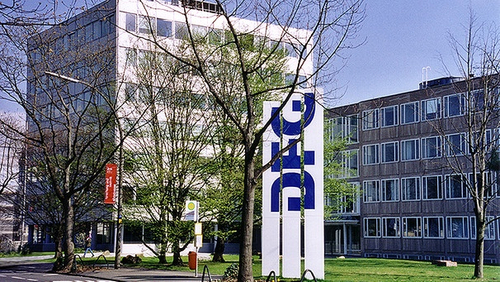

Das Praktikum
The Internship
Warum ein Praktikum und für wie lange?
Why an internship and for how long?
Im Rahmen dieser Umschulung muss jeder Teilnehmer ein oder mehrere Praktika
absolvieren. In dem Berufsförderungswerk findet in der Regel nur die theoretische Ausbildung
statt. Die praktischen Anwendungen in der realen Betriebswelt unterscheiden sich jedoch oft von
der reinen Theorie, weshalb ein Praktikum die ideale Chance bietet, das Erlernte anzuwenden. In
meinem Fall lief das Praktikum über 2 Jahre (vom 20.03.2024 bis zum 20.03.2026).
Within this retraining program, every participant must complete one or multiple
internships. The BFW mainly teaches theoretical concepts. Real-world industry practices often
differ from dry theories, making internships the perfect opportunity to apply and solidify
knowledge. In my case, the internship lasted 2 years (from March 20, 2024 to March 20, 2026).
Die Teilnehmer dürfen sich ihren Praktikumsplatz selbständig aussuchen. Voraussetzung
ist, dass das Unternehmen zum Ausbildungsprofil passt; zudem ist es erwünscht, das Praktikum in
Heimatnähe zu absolvieren.
Participants are allowed to select their host company independently. The only
requirement is that the company corresponds to the training profile; it is also preferred to
practice near one's home town.
Mein Kooperationsbetrieb: Die DFG
My Host Partner: The DFG

Mein Praktikumsbetrieb ist die Deutsche Forschungsgemeinschaft (DFG)
in Bonn. Der Hauptsitz liegt nur ca. 1 km von meinem Zuhause entfernt. Hier absolvierte ich mein
2-jähriges Praktikum vom 20.03.2024 bis zum 20.03.2026.
My internship host is the **German Research Foundation (DFG)** in Bonn. The head office
is located just 1 km from my home. I completed my 2-year internship here from March 20, 2024 to
March 20, 2026.
Was macht die DFG überhaupt?
What does the DFG do?
Die Deutsche Forschungsgemeinschaft (DFG) ist die zentrale, fachübergreifende
Selbstverwaltungsorganisation der Wissenschaft in Deutschland. Sie dient der Förderung der
Wissenschaft und Forschung an Hochschulen und anderen Forschungseinrichtungen.
The German Research Foundation (DFG) is the central, self-governing organization for
science and research in Germany. It serves to fund science and research at universities and
public research institutions.
Der Schwerpunkt der DFG liegt auf der Finanzierung von Forschungsvorhaben, die aus der
Wissenschaft selbst entwickelt werden (erkenntnisgeleitete Forschung). Sie entwirft
Wettbewerbsräume und führt faire, wissenschaftsgeleitete Begutachtungs- und Auswahlverfahren
durch. Zudem gestaltet sie die Rahmenbedingungen und Standards für das wissenschaftliche
Arbeiten mit.
The focus of the DFG lies on financing research proposals initiated by the scientific
community itself (curiosity-driven research). DFG organizes competitive spaces and coordinates
fair, peer-reviewed evaluation and selection processes. It also co-shapes framework regulations
and quality standards of science.
Darüber hinaus pflegt die DFG den Dialog mit Gesellschaft, Politik und Wirtschaft,
unterstützt den Wissenstransfer und berät staatliche Stellen in wissenschaftspolitischen Fragen.
Die Fördergelder werden zu zwei Dritteln vom Bund und zu einem Drittel von den Bundesländern
getragen.
Furthermore, DFG fosters dialogue with society, policy makers, and businesses, supports
technology transfer, and advises governmental bodies on science policies. Funding is provided by
the federal government (two-thirds) and the state governments (one-third).
Besondere Aufmerksamkeit widmet die DFG der Förderung der internationalen
Zusammenarbeit, von Wissenschaftler*innen in frühen Karrierephasen sowie der Gleichstellung der
Geschlechter und der Vielfalt in der Wissenschaft.
DFG pays special attention to promoting international collaboration, supporting
early-career researchers, and fostering gender equality and diversity in science.